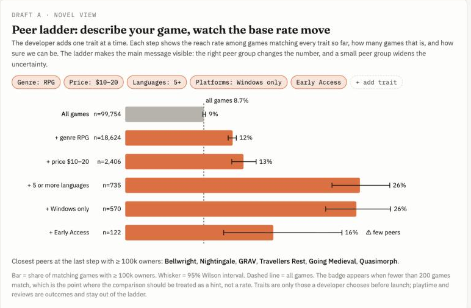
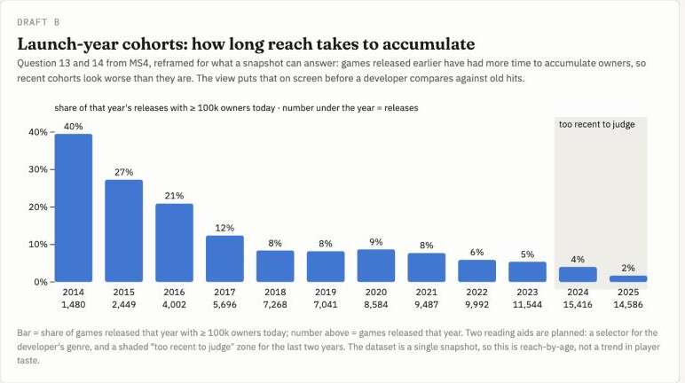
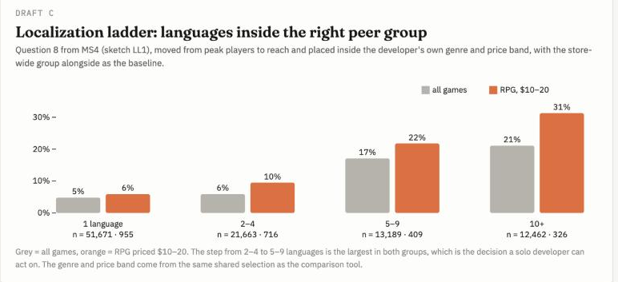

CS1710 · Steam Games Dataset · a data story for solo developers and small studios
Most of what a developer hears about Steam comes from the games that made it. This page looks at all 99,754 games with an owner estimate, asks which ones reached a real audience, and shows why comparing rates among similar games beats counting the famous cheap hits.
1 · Setting and hook
The setting. You are a solo developer or a team of a few people, deciding the genre, price, scope and languages of your next Steam game, with one shot at it. You know the hits in your genre. You have never seen the long tail of games that sold nothing, so your sense of what works is shaped by the games that survived. The first number we found speaks to exactly that instinct.
85%
of games that reached 100,000 owners cost $10 or less, free games included.
Look only at the winners and the lesson writes itself: price low. Half of all successful games sit on the $0 to $5 shelf alone. But abundance on a shelf is not the same as a good chance of success on it. The question a developer should ask is not where are the successful games but how often does a game like mine succeed.
Share of the 99,754-game store's successful titles (owner band ≥ 100k) on each price shelf. Snapshot prices.
2 · Rising insight
You ask: so I should price low?
Read each shelf as a proportion of itself and the picture flips. Among paid games, 7% of titles priced up to $5 reached 100,000 owners. On the $20 to $40 shelf the rate is 18%. The cheap shelf holds the most successful games only because it holds 61,319 games in total.
Grey: where the successful games are, as a share of all successful games. Blue: the reach rate inside each shelf. Only 8.7% of all games reach 100k, and 75% never pass 20,000 owners.
3 · Rising insight
You ask: is the store-wide rate even my rate?
The store-wide rate is still the wrong baseline for one developer, because genres differ. Inside RPG, the $20 to $40 shelf reaches 100,000 owners 22% of the time against 18% across all genres. Pick a genre to see how its shelves compare with the store.
Compare all genres with
Reach rate (owner band ≥ 100k) per price shelf, all genres against RPG. Games can carry several genres, so a game may count in more than one.
4 · Rising insight
You ask: what do the games I would be compared with look like?
Once the peer group is right, what its successful games share also changes. Successful RPGs priced $10 to $20 report six or more hours of average playtime 82% of the time, against 47% for all successful games. Only 25% of them ship on two or more operating systems, against 35% overall. A developer who looked at the store-wide profile would budget for the wrong things.
Share of successful games meeting each condition. Review share counts games with ≥ 50 reviews only. The same comparison for any genre and shelf is in the tool below.
5 · Aha moment
For solo Steam developers, ownership rates among similar games are more useful for pricing decisions than counts of popular low-priced titles.
Low-priced games account for most high-ownership titles, but they do not have the highest proportion of games reaching our threshold. Genre and price together reveal differences in characteristics such as playtime and platform support. So the useful habit is to choose the games you would actually be compared with, and read proportions inside that group rather than success stories outside it.
6 · Solution and next steps
Pick a genre in the bubbles, then a price band on the shelves. Each click narrows the next view to the games a developer would actually compare against, and every number is shown next to the same number for all successful games.
Loading 99,754 games…
Which genres reach the most owners? Click a bubble to focus the views below on that genre.
Each tile shows the share of successful games in the current selection that meet the condition, and below it the same share among all successful games. Filled box = meets condition. Review share needs ≥50 reviews. Owner estimates are bands, not sales.
Explore
Every dot is one game, placed by price and estimated-owner band. Drag a rectangle to select a region; the panels summarize the games inside it against the all-games baseline. Click a genre to light up its games.
Loading…
Price (x) against estimated-owner band (y). Drag to brush a region. Dots above the dashed line count as successful.
Share of selected games in each genre. The black tick is the same share across all games. Click a bar to highlight the genre.
Games can carry several genres, so genre shares overlap. Review share only counts games with ≥50 reviews.
Next steps · views planned for V2
Three views are drafted but not built. The first is the novel view: it turns the comparison tool into a ladder, so a developer can watch the base rate move as each trait of their own game is added, with the sample size and uncertainty in view. All three use real numbers from the pipeline. Open the full drafts page.


